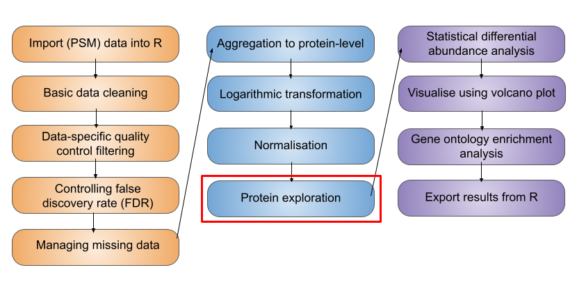
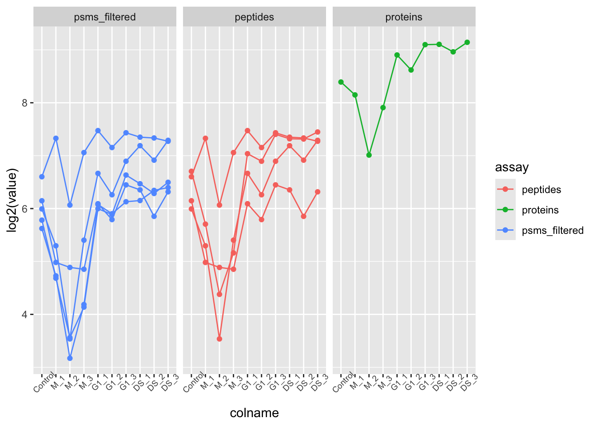
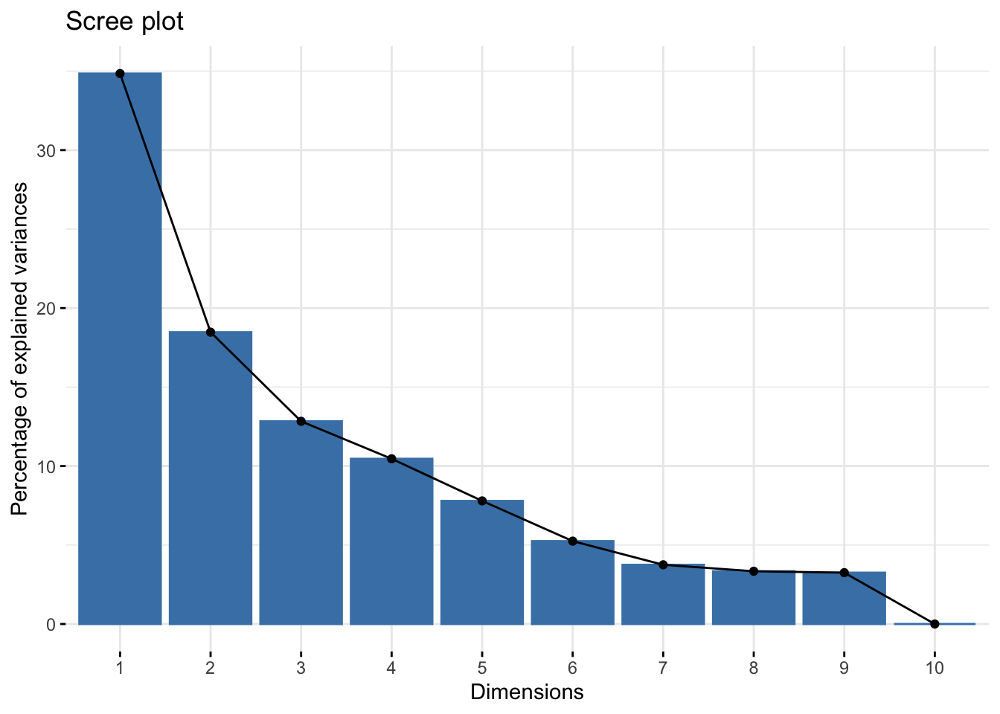
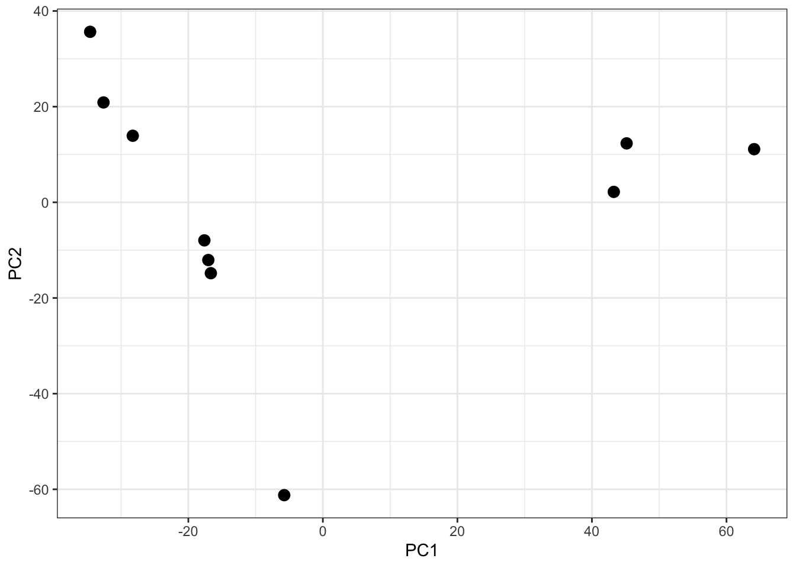

5 Exploration and visualisation of protein data
Learning Objectives
- Know how to determine the number of PSMs, peptides, proteins and protein groups (i.e., master proteins) in an experimental assay of a
QFeaturesobject - Understand what the
.ncolumn corresponds to when using theaggregateFeaturesfunction to aggregate features - Be able to use the
subsetByFeaturefunction to get data across all levels for a feature of interest - Appreciate the use of Principal Component Analysis (PCA) for visualising key factors that contribute to sample variation
- Complete PCA using the
prcompfunction from thestatspackage
Before we carry out statistical analysis to determine which of our proteins show significantly differential abundance across conditions (cell cycle stages), we first want to do some exploration of the protein level data. This includes determining some information that may be required for reporting and publication purposes as well as information corresponding to quality control.
5.1 Adding assay links
One of the main benefits of using QFeatures is that the hierarchical links between quantitative levels are maintained whilst allowing easy access to all data levels for individual features (PSMs, peptides and proteins) of interest. These links are generated and maintained when aggregating using the aggregateFeatures function, as well as the logTransform and normalize functions - all functions that take one experimental assay within a QFeatures object and create a new experimental assay in the same QFeatures object. However, before we started filtering the data, we created a copy of the raw data and added this back to our QFeatures object using the addAssay function, which does not maintain the links. Hence, our "raw_psms" experimental assay is not currently linked to any of our higher level experimental assays.
It may be beneficial to add a link between our final protein level data and the raw PSM data. This can be achieved using the addAssayLink function as demonstrated below.
## Create assay link
cc_qf <- addAssayLink(object = cc_qf,
from = "psms_raw",
to = "log_norm_proteins",
varFrom = "Master.Protein.Accessions",
varTo = "Master.Protein.Accessions")
## Verify
assayLink(x = cc_qf,
i = "log_norm_proteins")AssayLink for assay <log_norm_proteins>
[from:psms_raw|fcol:Master.Protein.Accessions|hits:39969]Adding a relation between these two experimental assays ensure traceability.
5.2 Determining the dimensions of our final protein data
Given that we started from the PSM level and did extensive data cleaning, filtering and management of missing data, it would be useful to know how much data we have left. We may want to know how many PSMs, peptides and proteins the log_norm_proteins assay contains, given that this is the data to which statistical analysis will be applied.
We can easily find the number master proteins by printing our QFeatures object
cc_qfAn instance of class QFeatures containing 6 assays:
[1] psms_raw: SummarizedExperiment with 45803 rows and 10 columns
[2] psms_filtered: SummarizedExperiment with 25687 rows and 10 columns
[3] peptides: SummarizedExperiment with 17231 rows and 10 columns
[4] proteins: SummarizedExperiment with 3823 rows and 10 columns
[5] log_proteins: SummarizedExperiment with 3823 rows and 10 columns
[6] log_norm_proteins: SummarizedExperiment with 3823 rows and 10 columns We can see we have 3823 master proteins, each representing a protein group.
cc_qf[["log_norm_proteins"]] %>%
nrow()[1] 3823
5.3 The .n column created by aggregateFeatures
If we look at the names of the columns within our “peptides" and "proteins" experimental assays we see that there is a column called .n. This column was not present in the PSM level experimental assays.
For example,
## Check columns in the log normalised peptide assay
cc_qf[["peptides"]] %>%
rowData() %>%
names() [1] "Checked" "Tags"
[3] "Confidence" "Identifying.Node.Type"
[5] "Identifying.Node" "Search.ID"
[7] "Identifying.Node.No" "PSM.Ambiguity"
[9] "Sequence" "Number.of.Proteins"
[11] "Master.Protein.Accessions" "Master.Protein.Descriptions"
[13] "Protein.Accessions" "Protein.Descriptions"
[15] "Number.of.Missed.Cleavages" "Delta.Cn"
[17] "Rank" "Search.Engine.Rank"
[19] "Ions.Matched" "Matched.Ions"
[21] "Total.Ions" "Quan.Info"
[23] "Number.of.Protein.Groups" "Contaminant"
[25] "Protein.FDR.Confidence" ".n" The .n column is created during the aggregation process that is completed via the aggregateFeatures function. This column stores information about how many child features (PSMs/peptides) were aggregated into each parent (peptides/protein) feature. Since we aggregated completed two steps of aggregation (1) PSMs to peptides, (2) peptides to proteins, the .n column in "peptides" tells us how many PSMs we have in support of each peptide, and in "proteins" how many peptides we have in support of each master protein.
Let’s examine peptide support,
cc_qf[["log_norm_proteins"]] %>%
rowData() %>%
as_tibble() %>%
pull(.n) %>%
table().
1 2 3 4 5 6 7 8 9 10 11 12 13 14 15 16
1228 710 449 313 232 162 149 110 67 54 58 53 33 26 20 25
17 18 19 20 21 22 23 24 25 26 27 28 29 30 31 32
19 12 8 14 9 8 7 5 6 2 1 2 1 3 1 1
33 34 35 36 40 41 44 45 48 49 52 54 59 60 69 86
5 3 2 4 2 2 1 2 1 1 1 3 1 1 1 1
87 90 173 223
1 1 1 1 The output tells us that we have 1228 proteins with 1 peptides, 710 proteins with support from 2 peptides, and so forth.
5.4 The subsetByFeature function
As well as determining the dimensions of our entire dataset, both in its raw state and its final state, sometimes we may wish to find out information about a specific feature e.g., a protein of interest. The QFeatures infrastructure provides a convenient function called subsetByFeature to extract all data levels corresponding to a particular feature.
The subsetByFeature function take a QFeatures object as its input and an additional argument specifying one or more features of interest. The output is a new QFeatures object with only data corresponding to the specified features.
Let’s take a look at O43583, the human density-regulated protein.
O43583 <- subsetByFeature(cc_qf, "O43583")
experiments(O43583)ExperimentList class object of length 6:
[1] psms_raw: SummarizedExperiment with 5 rows and 10 columns
[2] psms_filtered: SummarizedExperiment with 5 rows and 10 columns
[3] peptides: SummarizedExperiment with 4 rows and 10 columns
[4] proteins: SummarizedExperiment with 1 rows and 10 columns
[5] log_proteins: SummarizedExperiment with 1 rows and 10 columns
[6] log_norm_proteins: SummarizedExperiment with 1 rows and 10 columnsFrom this we can see that the O43583 protein is supported by 4 peptides derived from 5 PSMs.
We can use our new QFeatures object to create a plot which displays how the PSM data was aggregated to protein for this particular feature. To do so, we extract the assays of interest from our "O43583" QFeatures object and pass to the longFormat function which will covert the subset QFeatures object to a long format DataFrame. We can then use the standard ggplot2 functions to visualise the processing of this protein.
O43583[, , c("psms_filtered", "peptides", "proteins")] %>%
longFormat() %>%
as_tibble() %>%
mutate(assay_order = factor(assay,
levels = c("psms_filtered",
"peptides",
"proteins"))) %>%
ggplot(aes(x = colname, y = log2(value), colour = assay)) +
geom_point() +
geom_line(aes(group = rowname)) +
theme(axis.text.x = element_text(angle = 45, size = 7)) +
facet_wrap(~ assay_order)
Other useful functions that we do not have time to cover today include subsetByAssay, subsetByColData, subsetByColumn, subsetByFilter, subsetByRow, subsetByOverlap, and many more. To find out more about these functions you can execute a single question mark (?) followed by the function name. If you have the QFeatures package installed you should be able to access a help and information page for the function of interest.
For example:
?subsetByAssay5.5 Principal Component Analysis (PCA)
The final protein level exploration that we will do is Principal Component Analysis (PCA).
PCA is a statistical method that can be applied to condense complex data from large data tables into a smaller set of summary indices, termed principal components. This process of dimensionality reduction makes it easier to understand the variation observed in a dataset, both how much variation there is and what the primary factors driving the variation are. This is particularly important for multivariate datasets in which experimental factors can contribute differentially or cumulatively to variation in the observed data. PCA allows us to observe any trends, clusters and outliers within the data thereby helping to uncover the relationships between observations and variables.
5.5.1 The process of PCA
The process of PCA can be considered in several parts:
- Scaling and centering the data
Firstly, all continuous variables are standardized into the same range so that they can contribute equally to the analysis. This is done by centering each variable to have a mean of 0 and scaling its standard deviation to 1.
- Generation of a covariance matrix
After the data has been standardized, the next step is to calculate a covariance matrix. The term covariance refers to a measure of how much two variables vary together. For example, the height and weight of a person in a population will be somewhat correlated, thereby resulting in covariance within the population. A covariance matrix is a square matrix of dimensions p x p (where p is the number of dimensions in the original dataset i.e., the number of variables). The matrix contains an entry for every possible pair of variables and describes how the variables are varying with respect to each other.
Overall, the covariance matrix is essentially a table which summarises the correlation between all possible pairs of variables in the data. If the covariance of a pair is positive, the two variables are correlated in some direction (increase or decrease together). If the covariance is negative, the variables are inversely correlated with one increasing when the other decreases. If the covariance is near-zero, the two variables are not expected to have any relationship.
- Eigendecomposition - calculating eigenvalues and eigenvectors
Eigendecomposition is a concept in linear algebra whereby a data matrix is represented in terms of eigenvalues and eigenvectors. In this case, the the eigenvalues and eigenvectors are calculated based on the covariance matrix and will inform us about the magnitude and direction of our data. Each eigenvector represents a direction in the data with a corresponding eigenvalue telling us how much variation in our data occurs in that direction.
- Eigenvector = informs about the direction of variation
- Eigenvalue = informs about the magnitude of variation
The number of eigenvectors and eigenvalues will always be the same as the number of dimensions (variables) in the initial dataset. In our use-case, we have 10 samples, so we will have a covariance matrix of dimensions 10 x 10, and this will give rise to 10 eigenvectors and 10 associated eigenvalues.
- The calculation of principal components
Principal components are calculated by multiplying the original data by a corresponding eigenvector. As a result, the principal components themselves represent directionality of data. The order of the principal components is determined by the corresponding eigenvector such that the first principal component is that which explains the most variation in the data (i.e., has the largest eigenvalue).
By having the first principal components explain the largest proportion of variation in the data, the dimension of the data can be reduced by focusing on these principal components and ignoring those which explain very little in the data.
5.5.2 Completing PCA with prcomp
To carry out PCA on our data we will use the prcomp function from the stats package. We first extract the quantitative matrix (assay) corresponding to the log normalised protein level data. To make this matrix compatible with prcomp we also need to transpose the data such that the samples become rows and proteins become columns. This is easily achieved using the t function.
Our protein data does not contain missing values. However, if there were any missing values in the data, these would need to be removed using filterNA to facilitate compatibility with PCA.
protein_pca <- cc_qf[["log_norm_proteins"]] %>%
assay() %>%
# filterNA() %>%
t() %>%
prcomp(scale = TRUE, center = TRUE)
summary(protein_pca)Importance of components:
PC1 PC2 PC3 PC4 PC5 PC6
Standard deviation 36.5002 26.5765 22.1495 19.9970 17.26112 14.16447
Proportion of Variance 0.3485 0.1847 0.1283 0.1046 0.07794 0.05248
Cumulative Proportion 0.3485 0.5332 0.6616 0.7662 0.84410 0.89658
PC7 PC8 PC9 PC10
Standard deviation 11.9731 11.30108 11.14872 1.069e-13
Proportion of Variance 0.0375 0.03341 0.03251 0.000e+00
Cumulative Proportion 0.9341 0.96749 1.00000 1.000e+00We now have a simplified representation of our quantitative data in the form of principle components (PC). The prcomp function outputs a list of 5 different information sources, each of which can be accessed using the $ sign nomenclature.
-
sdev- holds the standard deviation values for each of the principle components -
rotation- a matrix which contains each of our proteins as a row and the corresponding PC values as columns -
x- a matrix which contains each of our samples as a row and the corresponding PC values as columns -
center- ifcenter = TRUEthen contains the centering values, otherwiseFALSE -
scale- ifscale = TRUEthen contains the scaling values, otherwiseFALSE
To visualise the resulting PCs and how much of the data variation they explain we can plot a scree plot using the fviz_screeplot function. The resulting plot displays the proportion of total data variation explained by each of PC.
fviz_screeplot(protein_pca)
Looking at a scree plot can be useful when deciding which principle components to plot and investigate further. We now want to plot each of our samples in PCA space. To do this we will use the protein_pca$x data. Typically a 2D PCA plot will display PC1 and PC2, since these are the PCs that explain the most variation within the dataset, but it can also be useful to plot later PCs if they also explain a large proportion of variation.
protein_pca$x %>%
as_tibble() %>%
ggplot(aes(x = PC1, y = PC2)) +
geom_point(size = 3) +
theme_bw()
It is generally advisable to colour each point based on all possible explanatory variables that may have contributed to the observed variation. In our case we only have one - the cell cycle stage.
For more complicated multivariate experiments all possible explanatory variables should be visualised. For example, if multiple batches of samples have been prepared separately or several TMTplexes were used, these factors should be visualised (e.g., by colour) on the PCA plot to see whether they are contributing the the observed variation. If the samples do cluster based on unwanted factors such as batch or TMTplex, additional normalisation may be required.
Key Points
- The
.ncolumn created byaggregateFeaturesis a useful way to trace how many child features have been aggregated into a single parent feature - The
subsetByFeaturefunction can be used to generate aQFeaturesobject with all levels of data corresponding to one or more features of interest - Principal Component Analysis (PCA) is a dimensionality reduction method that can be used to visualise the relationship between explanatory variables and observed data. If samples cluster together based on a particular factor, this indicates that the factor